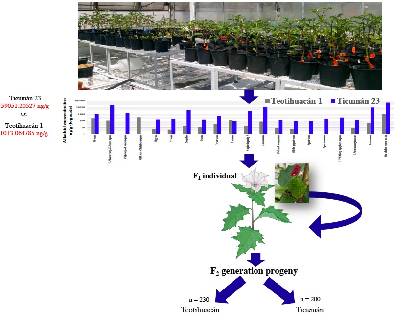
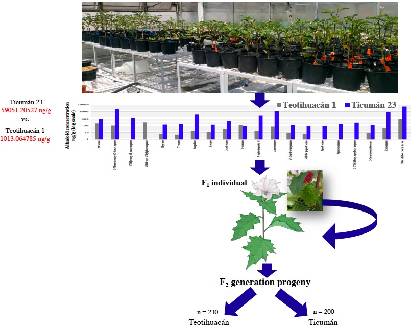
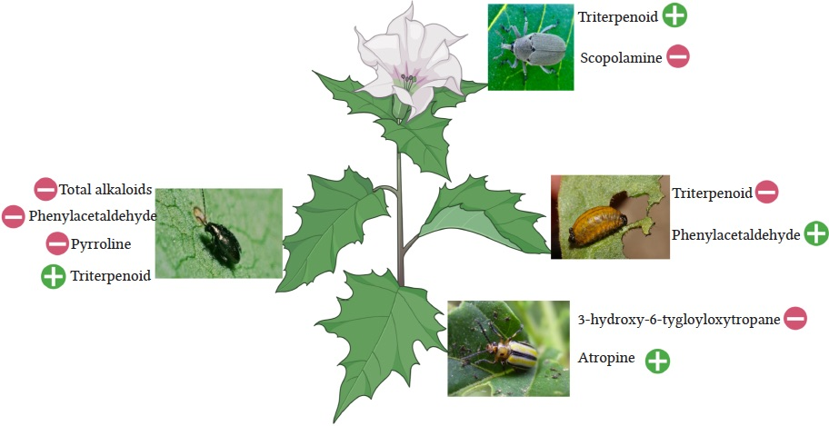
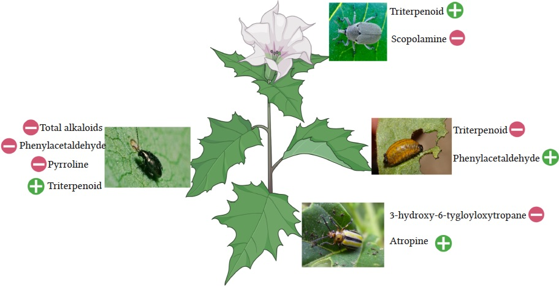

Plant Genomics and evolutionary ecology of plant-herbivore interactions
Evolution of plant defenses and local adaptation
Research interests
Overall, I am interested to study how plants are adapted to its local abiotic and biotic conditions and the genomic basis of local adaptation. How natural selection operates in the genome and shapes the phenotypes? To this end, I used tools from Genomics, including genome aasembly,c omparative genomics, populations genomics, gene family analyses, and Ecology and Evolution. I am particularly interested to elucidate how plants defend themselves againts its herbivores.
Local adaptation
Quantitative genetics and genomics
 

Combining traditional tools such as green house experiments; common garden experiments, field work, reciprocal transplant experiments and moder tools such as mass spectometry (HPLC-TOF-MS), QTL mapping, Identity by descent analyses, genome-wide association studies, pop genomics, gene orthology/gene family analyses; how natural selection isoperating in the genome and shaping the genomic and phenotypic composition of the populations, specially shaplin plant-insect interactions.
Chemical ecology of plant-herbivore interactions
 

Coevolution between plant and herbivores, evolution of plant chemical defenses, theory geographic mosaic of coevolution, phenotypic selection on plant defensive traits. To this end we used genomics and mass spectometry along with experiments in field and controled conditions.